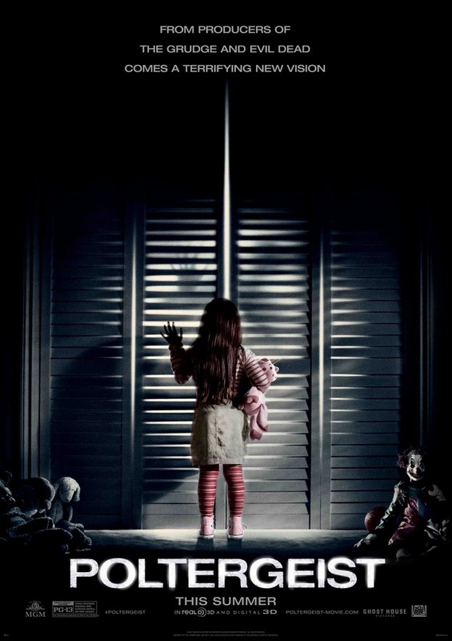

Poltergeist (© Twentieth Century Fox)
Termin: 28.05.2015
Genre: Horror
Nationalität: USA
Homepage: http://www.foxmovies.com/movies/poltergeist
Eric Bowen (Sam Rockwell), Ehemann und Vater verliert seinen Job. Daher muss seine ganze Familie mit ihm in eine andere Stadt ziehen. In ihrem neuen Zuhause häufen sich schon bald seltsame Vorfälle. Erics Frau Amy (Rosemarie DeWitt) meint, sie könne mit den Toten sprechen. Als die jüngste Tochter Madison (Kennedi Clements) auf mysteriöse Weise verschwindet überschlagen sich die Ereignisse. Die ganze Familie gerät in Panik. Schnell ist allen klar, dass hier nur übernatürliche und finstere Mächte im Spiel sein müssen. Eine Parapsychologin (Jane Adams), die Madisons Fall untersuchen soll ist die letzte Hoffnung. Zusammen mit dem TV-Moderator Carrigan Burke (Jared Harris) und seinem Fernsehteam von »Haunted House Cleaners« soll sie klären, was mit Madison geschah. So gehen sie alle den seltsamen und unheimlichen Geschehnissen im Hause der Bowens nach, mit einem einzigen Zweck: Sie wollen dem ganzen Spuk ein Ende setzen.